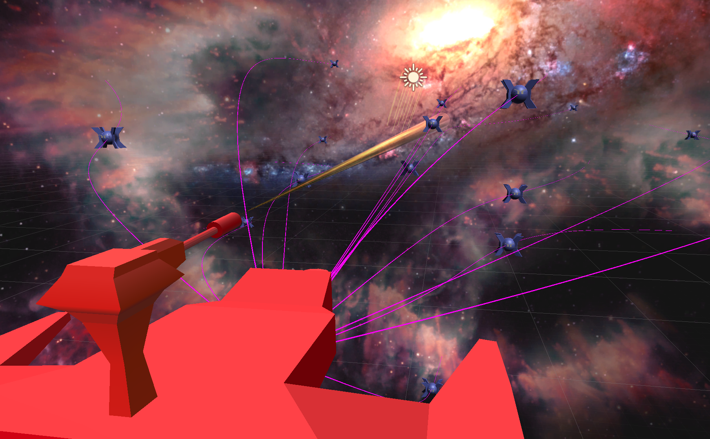

Abstract
We were initially planning on creating a phase-change melting simulator but realized that the scope of the project was quite enormous. We spent some time together trying to make sense of the paper we were trying to base our simulation on, but the paper utilized a lot of complicated math and physics that we did not have the technical background to fully understand. After some consideration, we decided to pivot our project direction entirely and opted for a more reasonable idea. We agreed that a 3D game in unity with a few graphical components from the course would be a lot more approachable in scope. To come up with an idea for the game, we thought about the course material and sought after concepts that would be easily utilized in a video game context. An obvious one, that has been used many times before in previous projects, was ray-tracing to shoot projectiles at enemies. However, we wanted to elevate this concept to another level so we thought it would be cool to use the concept of Monte Carlo Integration and how it was used to calculate the irradiance of a light source off a surface. Thus, our project idea was born: an endless runner whereby the player controls a spaceship with a powerful laser that shoots out in a cone, dealing variable damage based on distance and width of the cone. We also decided to include other concepts like Bezier Curves and Mesh Representations to enhance the gameplay.
Technical Approach
Ray-tracing with a Cone
In order to calculate how much damage the player’s laser was doing to each enemy unit, we used an algorithm inspired by the Monte Carlo Direct Lighting Irradiance Estimator we learned in lecture. The laser always emits a fixed amount of power (damage) at each timestep and is spread evenly across the laser’s “sphere of influence” (the spread of the cone). To estimate the proportion of this damage that each enemy is taking, we shot out N rays randomly within the laser’s cone from the laser’s source. Each ray that struck an enemy applied p/N damage (where p is the total power per timestep of the laser). In this way, if an enemy was only covered by half of the laser, then it would take approximately half of the damage at that time step. This implementation introduced interesting gameplay decisions whereby narrowing the spread of the laser would allow higher damage density while making it harder to aim. Conversely, increasing the laser’s spread would make it easier to hit targets but would lower damage density.
Pathing via Bezier Curves
Given that our game was going to be a shooter game, we needed to create objects that the player could shoot at. So, we chose to use a combination of procedural generation and bezier curves for our enemies. An enemy’s spawn point is determined through a random generator. A constraint we placed on the generator was that an enemy would always spawn in front of the player. Just having the enemies path from their spawn point towards the player seemed bland and so we decided to use bezier cubic curves to give our enemies interesting paths towards the player. To define these curves we needed four control points which were the enemy’s position, the player’s position, and two randomly generated points in between the two positions. The function would then generate 50 points on this cubic curve which would be passed on to each enemy as a set of positions it must traverse giving us our desired curved pathing.
Model Degradation
One of the features we were planning on implementating for our game was a model degradation component, where the enemy loses a certain amount of geometry proportional to how much damage is taken. The idea behind this feature is to taken advantage of the halfedge structure introduced in Project 2. After exporting the enemy model from Maya as an .obj file, we used OpenMesh's halfedge data structure to read in the triangulated model that we can then modify. We accumulate all of the model's faces in an array and shuffle the array to randomize which faces would be deleted. This algorithm also supports the ability to determine exactly how many faces we want to delete by indexing into the shuffled array for a given range. Thus, we can show the model degrading over a period of time.

|
While we can pre-compute these degraded models at various stages, we found it difficult to implement in real time in Unity. Unfortunately, we could not figure out how to edit meshes directly in Unity in a similar way as we did with OpenMesh's halfedge data structure, so we could not integrate this feature into our game by the project due date. However, if we had more time, we would explore different data structures and consider editing the model using Unity's Mesh's triangle and vertex data.
Results
Your final images, animations, video of your system (whichever is relevant). You can include results that you think show off what you built but that you did not have time to go over on presentation day.
|  |
References
Reflections
Given the time invested, we believe we did a pretty fair job considering how we blew a significant amount of time trying to understand a project we probably never would have understood. In building this game from scratch, we learned a lot about Unity, and its various features and limitations. Since various shooter games have been created previously in the course, we had to think a little out of the box in terms of gameplay. As a result, we created a game that was an amalgamation of many of the projects we have done during the course.
Member Contributions
Dan
- Implemented Ray-Tracing/Damage calculations
- Modeled the laser’s beam and aligned the visual model to the scope of the damaging rays
Maddie
- Modeled assets (spaceship, laser, enemy) in Maya
- Model Degradation
Min Jae
- Setup the core fundamentals of the game (player, enemies, setting)
- Implemented procedural generation of enemies
- Implemented bezier curves